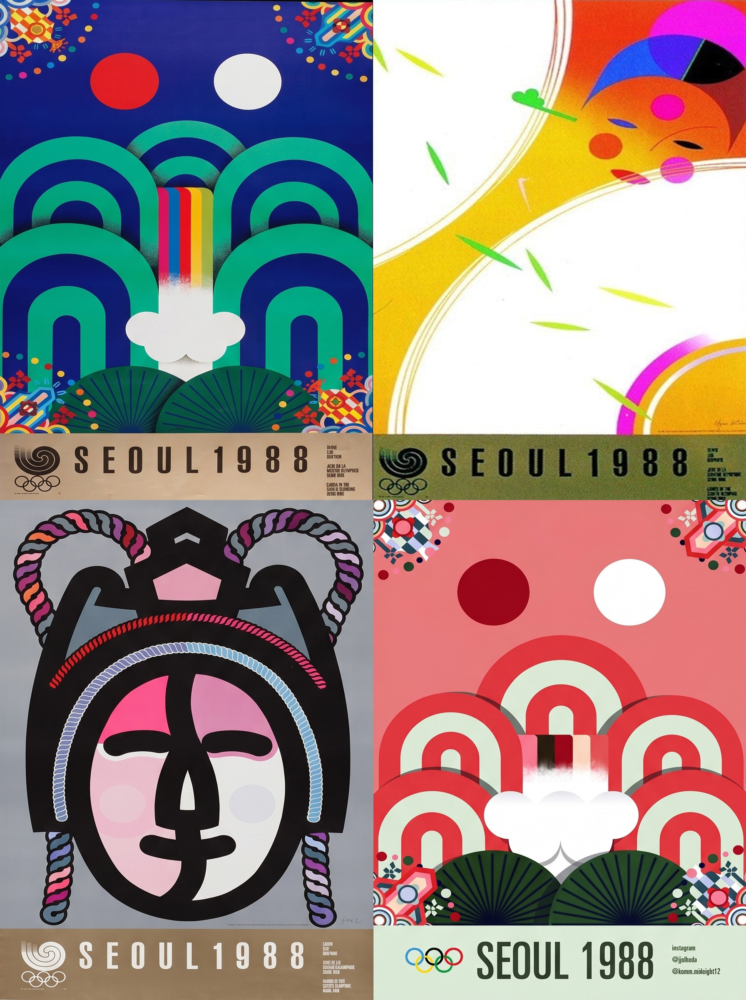

서울올림픽
포스터
서울 올림픽 공식 포스터는 두 개의 이미지를 조합해 '화합과 진보'라는 올림픽의 이상을 나타냈습니다. 이 포스터에서는 올림픽의 순수한 정신을 형상화한 다섯 개의 링이 영원한 세계 평화를 밝히고자 하는 올림픽의 이상을 표현하기 위해 밝은 형태로 연결되어 있습니다.
올림픽 상징을 통해 인간과 자연의 조화를 강조하며, 조용한 아침의 나라 대한민국을 상징적으로 표현합니다. 또한 서울 올림픽 조직위원회는 공식 포스터 외에도 다양한 시리즈를 제작해 서울 올림픽의 정신을 전달했습니다.
